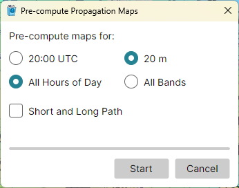

Pre-computing Propagation
A propagation map takes a second or so to compute. To step through the hours of a day, or through the bands, without waiting for each map, compute them in advance: pick Tools > Pre-compute Propagation Maps..., shown with the Amateur Radio functions on.

The Dialog
Under Pre-compute maps for:, choose:
- the current quarter hour, shown as its UTC time, or All Hours of Day - the 96 quarter hours of the 24 hours from now;
- the band the map shows, or All Bands;
- Short and Long Path - ticked, both paths are computed; cleared, the path the map shows.
Click Start. The dialog counts the maps done and shows a progress bar; maps already computed are counted as done at once. While it runs, Start becomes Stop.
When the batch is done or stopped, the dialog says so and stays open, so you can start another; its Cancel button becomes Close. Closing the dialog stops a batch that runs.
When the Maps Are Used
The maps are kept on disk, in the user data folder, for the settings they were computed with. They are shown at once when the Clock panel steps to their time, or when you pick their band or path.
A change of the home location, of a propagation setting, or of the sunspot number or Ap index stops the batch, and the maps already computed no longer match; the dialog reports it. All Hours of Day at All Bands on both paths is 1,728 maps, which takes several minutes even on a fast computer.